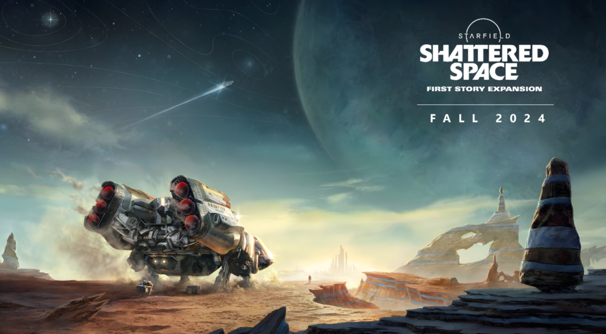
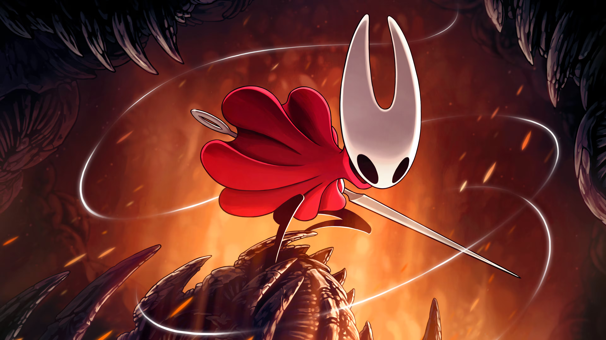

📰 Novo GTA anunciado
Rockstar confirma lançamento do GTA VI em 2026 com gráficos de última geração.
30/08/2025Fique por dentro dos lançamentos, novidades e tudo que rola no universo gamer.
Ver últimas notíciasRockstar confirma lançamento do GTA VI em 2026 com gráficos de última geração.
30/08/2025Expansão "Shadow of the Erdtree" traz novos chefes e regiões misteriosas.
25/08/2025Nintendo revela novo Mario 3D e sequência de Zelda Breath of the Wild.
20/08/2025
Nova DLC traz missões intergalácticas e exploração de sistemas inéditos.
Lançamento: 15/09/2025Square Enix promete revolução no combate e narrativa épica.
Lançamento: 10/11/2025
O aguardado jogo indie chega com novos mapas e habilidades únicas.
Lançamento: 05/12/2025